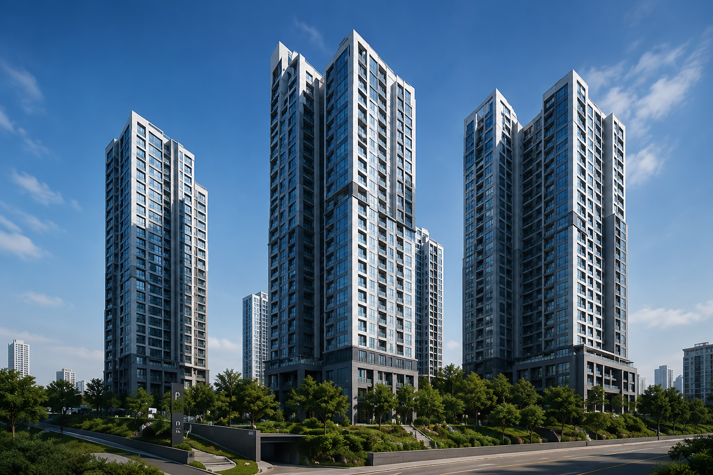

0 1 0 1 A I 0 1 D A T A 1 0 S C A N1 0 1 0 S E O U L 1 0 M A P 0 10 1 1 0 P R I C E 0 1 A R E A1 0 0 1 T R A N S I T 1 0 L I F E0 1 0 1 N O I S E 1 0 Z O N E1 1 0 0 V A L U E 0 1 R A N K0 0 1 1 M E T R O 1 0 R O U T E1 0 1 1 B U D G E T 0 1 S C O R E0 1 0 0 G R I D 1 0 F I L T E R1 0 1 0 H O U S E 0 1 S P A C E0 1 A I 1 0 M A P 0 1 D A T A1 0 S C A N 0 1 Z O N E 1 00 1 R A N K 1 0 A R E A 0 11 0 V A L U E 0 1 A I 1 00 1 M E T R O 1 0 D A T A1 0 L I F E 0 1 S C A N0 1 R O U T E 1 0 M A P1 0 P R I C E 0 1 A I0 1 S P A C E 1 0 D A T A1 0 H O M E 0 1 S C O R E0 1 0 1 1 0 A I D A T A1 0 1 0 0 1 M A P S C A N0 1 1 0 1 0 R A N K1 0 0 1 0 1 G R I D
Teo AI Scanning
로그인 후 서울시 내 원하는 지역, 거래 조건, 생활 인프라, 소음 민감도 등을 입력하면
개인화된 명당 분석이 시작됩니다.
AI 분석 대기
• 생활 기준 입력 필요
• 예산 조건 미설정
• 우선순위 정보 없음
지역 선택 대기
예산 입력 대기
생활 기준 대기
분석 전
MYOUNGDANG AI SPACE SCANNER
내 생활 패턴에 맞는 공간을 먼저 읽어보는 서비스
활동지역, 생활시간, 직업, 취미와 예산을 바탕으로 주거 후보를 탐색합니다.
탐색 전에는 라이프스타일 기준만 정리합니다.
L-Rod생활 기준 스캔
Teo매물·실내 뷰포트
Tao시세·생활권 분석
Map후보 아카이빙
Tao Map
로그인 후 후보 공간 비교 지도를 확인할 수 있습니다.
🔒 아직 추천 후보가 없습니다.
로그인 후 생활 기준을 설정하면 후보지가 표시됩니다.
Teo
매물정보와 실내 정보를 한 화면에서 전환해 보는 Teo 뷰포트입니다. 지역은 도시·구·동 단위로 선택합니다.
현재 시험 단계에서는 서울시 용산구 데이터만 제공합니다.
1순위 매물

용산 푸르지오 써밋
한강로2가 · 오피스텔 · 84㎡ · 매매 5억~7억
용산역 7분강남 24분생활인프라 상적합도 92
실내 · 환경 시뮬레이션
용산 푸르지오 써밋
적합도 92
일조량 영상video/sunlight.mp4 파일을 넣으면 이 영역에서 재생됩니다.
Master Tao
사용자가 Teo에서 핀을 선택하면 Master Tao가 입지, 생활권, 시세 감각, 동네 체감 정보를 종합해 설명합니다.
선택 매물 분석
아직 핀을 선택하지 않았습니다. Teo에서 매물을 선택하면 분석 결과가 갱신됩니다.
--
생활권 정보
당근 동네생활처럼 체감되는 편의점, 카페, 병원, 산책로, 야간 유동량 정보를 요약합니다.
시세 분석 페르소나
Master Tao는 집값 시세, 관리비 부담, 전월세/매매 전환 가능성, 주변 개발 호재를 상담하는 부동산 분석형 페르소나입니다.
“리치고”처럼 숫자 기반 시세 흐름을 말하되, 동시에 동네 커뮤니티에서 나올 법한 생활 체감 정보까지 함께 설명하는 역할입니다.
Tao Map
Tao Map은 선택한 매물과 비교 후보를 저장하는 아카이빙 시스템입니다. 적합도, 생활권, 시세 감각, 실내 환경 옵션을 함께 비교합니다.
아카이브
지역
선택 상태
적합도
생활권 기록
시세 메모
실내 옵션
용산 푸르지오 써밋
한강로2가
대표 후보
92
용산역 7분, 생활인프라 상, 한강공원 8분
오피스텔 · 84㎡ · 매매 5억~7억
일조량 / 미세먼지 / 환기
시티파크 라이트룸
한강로3가
비교 후보
88
여의도 18분, 공원 접근, 대형몰 생활권
투룸형 · 59㎡ · 전세 4.8억
일조량 / 환기
후암 슬로우하우스
후암동
예산 후보
84
서울역 14분, 골목 상권, 예산 절감형
원룸형 · 36㎡ · 월세 1000/78
미세먼지 / 환기
최종 의사결정
박준혁님의 34세 직장인 1인 가구 페르소나를 기준으로 최적의 용산구 후보지를 추천합니다.
최종 추천 공간
용산 푸르지오 써밋 오피스텔
92점
선택 이유
신용산역 도보권, 직주근접, 생활 인프라가 모두 우수해
직장인 1인 가구에게 가장 높은 생활 적합도를 보입니다.
대안 선택지
예산 부담이 크다면 시티파크 라이트룸,
예산을 가장 우선한다면 후암 슬로우하우스도 현실적인 대안입니다.